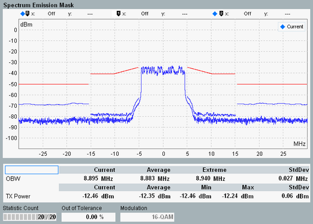
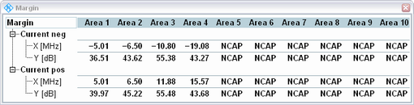

The spectrum emission mask results are displayed in a diagram and as a table of statistical results. Additional margin results can be shown/hidden via hotkey.

The measurement covers a symmetric frequency range around the center carrier frequency.
Resolution filters with bandwidths of 30 kHz, 100 kHz and 1 MHz are available. Traces for all three resolution bandwidths (RBW) can be displayed in parallel. The 30 kHz continuous trace is at the bottom, the 1 MHz trace on top and the 100 kHz trace in-between. In the figure above, the 100 kHz trace is present for carrier offset frequencies from 5 MHz to 15 MHz, the 1 MHz trace for offset frequencies beyond 15 MHz.
The frequency ranges of the 100 kHz and 1 MHz traces are determined by the active limits using these resolution bandwidths. Thus these traces are only available for out-of-band frequency ranges, with a gap for the inband frequencies. These traces can also be hidden completely if not used at all by the active limits. Or they can be displayed as discontinuous traces with many gaps if the limits are defined in this way.
The shape of the resolution filter is configurable for 100 kHz and 1 MHz bandwidth (Gaussian or bandpass). For 30 kHz traces, a Gaussian filter is used.
According to 3GPP TS 36.141, the measurement must be carried out at maximum output power of the eNodeB.
The OBW result below the figure indicates the occupied bandwidth. It is the width of a frequency range around the assigned channel frequency containing 99% of the total integrated power of the transmitted spectrum.
See also "Spectrum Emission Mask".
To show/hide the margin results, use the softkey - hotkey combination "Display" - "Margin On | Off".

A margin indicates the vertical distance between the spectrum emission mask limit line and a trace. For each emission mask area, the margin represents the "worst" value, i.e. the minimum determined for the frequencies of the area:
Margin = minimum (P(f)mask - P(f)trace)
A negative margin indicates that the trace is located above the limit line, i.e. the limit is exceeded.
The margin result display presents for each active area an "X [MHz]" and a "Y [dB]" value, for negative ("neg") and positive ("pos") offset frequencies. The Y-value indicates the margin (worst value within area), the X-value the frequency offset at which the margin value was found. These frequency offsets are indicated relative to the center carrier frequency.
The screenshot above shows margin results for the current trace. Corresponding margin results are displayed for all active traces (current, average, maximum trace). In this context "Average" means "margins for average trace" and not "average values of margins for current trace". "Minimum" means "margins for maximum trace" (resulting in minimum margins).
For additional screen elements, refer to "Common View Elements".